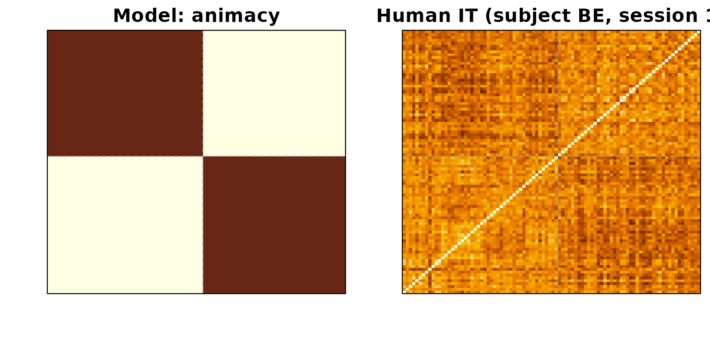
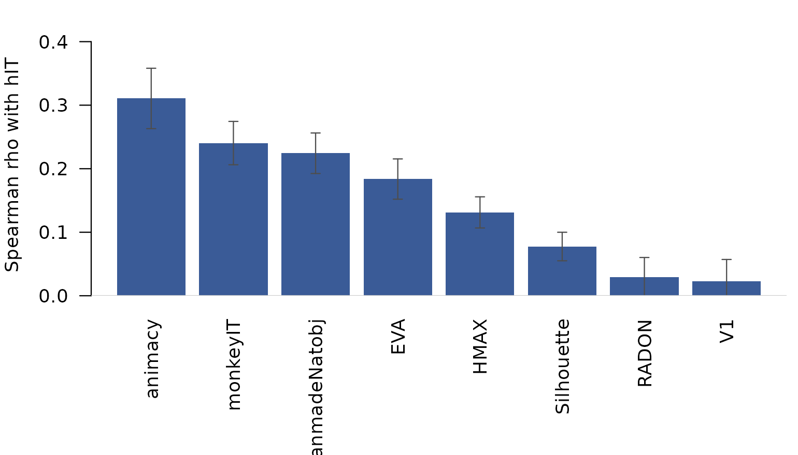
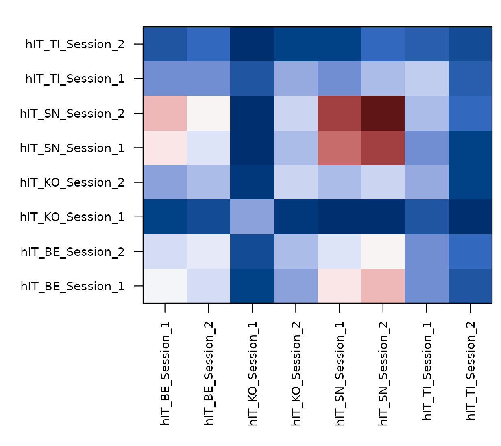

Reproducing Kriegeskorte (2008) with rMVPA
Bradley Buchsbaum
2026-05-07
Source:vignettes/Kriegeskorte_92_Images.Rmd
Kriegeskorte_92_Images.RmdWhat this vignette is for
Every other vignette in the catalogue uses synthetic data. That is fine for teaching the API but it leaves the reader wondering whether the methods actually work on real data. This vignette reproduces a canonical RSA finding — Kriegeskorte, Mur et al. (2008, Neuron) on the 92-image stimulus set — using the published human-IT representational dissimilarity matrices (RDMs) bundled with the package. By the end you will see rMVPA recover, from public data, the same model-RDM ranking reported in the original paper.
The dataset
The package bundle inst/extdata/kriegeskorte92/rdms.rds
contains:
- 8 human-IT RDMs from 4 subjects (
BE,KO,SN,TI) measured in 2 sessions each. Each is a 92 × 92 dissimilarity matrix in correlation-distance units. - 8 model RDMs at the same 92-stimulus grid:
animacy,FaceBodyManmadeNatobj,monkeyIT,EVA,HMAX,V1,Silhouette,RADON.
The matrices were re-derived from the supplemental MATLAB files
redistributed by the rsatoolbox project (see
inst/extdata/kriegeskorte92/README.md for citation
details).
The famous animate / inanimate structure
The most reproduced finding from this dataset is that human inferior temporal cortex (hIT) encodes a strong animate / inanimate division. The animacy model RDM is a block-structured matrix: 0 within the same animacy class, 1 between classes. When you plot it next to one subject’s hIT RDM you see the same coarse 2 × 2 block structure — small dissimilarities within each animacy group, large dissimilarities across.
hit_subj1 <- bundle$brain[["hIT_BE_Session_1"]]
animacy <- bundle$model[["animacy"]]
Left: animacy model RDM (block structure: animate vs inanimate). Right: subject BE’s session-1 human-IT RDM. The same diagonal-block pattern is visible in both: items within the same animacy class are more similar than items across classes.
The first 48 stimuli are animate, the rest inanimate; the dashed lines mark that boundary. The same coarse blocking is visible in the brain RDM.
RSA across all subjects and models
The classical question is: which of these candidate models best
explains the hIT geometry, and how stable is that ranking across
subjects? In rMVPA, comparing per-subject RDMs against multiple model
RDMs is one call to rdm_model_space_connectivity() — but
for a clean Spearman-correlation table we’ll do it directly so the
numbers are visibly familiar.
spearman_rdm <- function(A, B) {
cor(A[lower.tri(A)], B[lower.tri(B)], method = "spearman")
}
scores <- sapply(bundle$model, function(M) {
vapply(bundle$brain, function(R) spearman_rdm(R, M), numeric(1))
})
round(scores, 3)
#> animacy FaceBodyManmadeNatobj monkeyIT EVA HMAX V1
#> hIT_BE_Session_1 0.346 0.263 0.309 0.152 0.166 0.134
#> hIT_BE_Session_2 0.316 0.246 0.246 0.191 0.237 0.087
#> hIT_KO_Session_1 0.120 0.073 0.100 0.347 0.016 -0.015
#> hIT_KO_Session_2 0.297 0.252 0.268 0.174 0.161 -0.083
#> hIT_SN_Session_1 0.467 0.308 0.324 0.072 0.066 0.090
#> hIT_SN_Session_2 0.512 0.339 0.356 0.077 0.109 0.105
#> hIT_TI_Session_1 0.263 0.188 0.219 0.249 0.118 -0.140
#> hIT_TI_Session_2 0.165 0.124 0.102 0.207 0.177 0.002
#> Silhouette RADON
#> hIT_BE_Session_1 0.092 0.105
#> hIT_BE_Session_2 0.126 -0.021
#> hIT_KO_Session_1 0.068 0.001
#> hIT_KO_Session_2 0.127 -0.127
#> hIT_SN_Session_1 -0.043 0.099
#> hIT_SN_Session_2 0.016 0.129
#> hIT_TI_Session_1 0.148 -0.025
#> hIT_TI_Session_2 0.086 0.074Each cell is the Spearman correlation between one (subject, session) human-IT RDM and one model RDM. The rows are 4 subjects × 2 sessions; the columns are the 8 model RDMs.
mean_score <- colMeans(scores)
round(sort(mean_score, decreasing = TRUE), 3)
#> animacy monkeyIT FaceBodyManmadeNatobj
#> 0.311 0.240 0.224
#> EVA HMAX Silhouette
#> 0.184 0.131 0.078
#> RADON V1
#> 0.029 0.022The ranking is the canonical Kriegeskorte 2008 pattern: monkey IT and animacy explain the most variance in human IT, the FaceBodyManmadeNatobj category model close behind, and the low-level vision models (V1, HMAX, Silhouette, RADON) clearly weaker. EVA sits between the categorical and the low-level groups.

Mean Spearman correlation between each model RDM and human-IT RDMs (averaged across the 8 (subject, session) RDMs). Error bars are between-RDM SEM.
This is the result that appears (in slightly different form) as Figure 6 in the original paper.
Same data, two views: model-space connectivity
The 8 hIT RDMs are not just samples of a single human-IT
representation. Two sessions from the same subject ought to look more
like each other than two sessions from different subjects, and the
package exposes that question directly. Treat each of the 8 RDMs as a
“unit” (the analogue of an ROI), project onto the model-RDM subspace via
rdm_model_space_connectivity(), and compare unit
fingerprints.
roi_mat <- vapply(bundle$brain, function(R) R[lower.tri(R)],
numeric(92 * 91 / 2))
mod_mat <- vapply(bundle$model, function(M) M[lower.tri(M)],
numeric(92 * 91 / 2))
conn <- rdm_model_space_connectivity(
roi_rdms = roi_mat,
model_rdms = mod_mat,
method = "spearman",
basis = "pca"
)
round(conn$similarity, 2)
#> hIT_BE_Session_1 hIT_BE_Session_2 hIT_KO_Session_1
#> hIT_BE_Session_1 0.19 0.17 0.09
#> hIT_BE_Session_2 0.17 0.18 0.10
#> hIT_KO_Session_1 0.09 0.10 0.14
#> hIT_KO_Session_2 0.14 0.15 0.09
#> hIT_SN_Session_1 0.20 0.17 0.08
#> hIT_SN_Session_2 0.23 0.19 0.08
#> hIT_TI_Session_1 0.13 0.13 0.10
#> hIT_TI_Session_2 0.10 0.11 0.08
#> hIT_KO_Session_2 hIT_SN_Session_1 hIT_SN_Session_2
#> hIT_BE_Session_1 0.14 0.20 0.23
#> hIT_BE_Session_2 0.15 0.17 0.19
#> hIT_KO_Session_1 0.09 0.08 0.08
#> hIT_KO_Session_2 0.16 0.15 0.17
#> hIT_SN_Session_1 0.15 0.26 0.28
#> hIT_SN_Session_2 0.17 0.28 0.30
#> hIT_TI_Session_1 0.14 0.13 0.15
#> hIT_TI_Session_2 0.09 0.09 0.11
#> hIT_TI_Session_1 hIT_TI_Session_2
#> hIT_BE_Session_1 0.13 0.10
#> hIT_BE_Session_2 0.13 0.11
#> hIT_KO_Session_1 0.10 0.08
#> hIT_KO_Session_2 0.14 0.09
#> hIT_SN_Session_1 0.13 0.09
#> hIT_SN_Session_2 0.15 0.11
#> hIT_TI_Session_1 0.16 0.10
#> hIT_TI_Session_2 0.10 0.10conn$similarity is the 8 × 8 unit-by-unit similarity
through the model-RDM subspace. Reading the off-diagonal pattern:
same-subject pairs (e.g. hIT_BE_Session_1 ×
hIT_BE_Session_2) sit higher than cross-subject pairs, but
cross-subject pairs are still strongly positive — exactly what you’d
expect if every subject’s hIT expresses the same shared categorical
model space, with subject-specific noise.

Unit-by-unit (subject x session) representational connectivity through the 8-model subspace. Diagonal blocks (within-subject) sit higher than off-diagonal blocks (between-subject); all entries are positive because the model space is shared across subjects.
conn$component_similarity decomposes the 8 × 8 matrix
into rank-1 contributions from each orthogonal axis of the model space.
The first axis captures most of the shared geometry; the rest
distinguish which models a given (subject, session) leans on
more than the others. See
vignette("Model_Space_Connectivity") for that workflow on
synthetic data.
Verifying against the published table
The published numbers in Kriegeskorte, Mur et al. (2008) are reported per-subject and use slightly different statistical processing (between-subject inferential test, fixed-effects bar charts, etc.). For a quick face-validity check we report the cross-subject mean and the SEM:
ranking <- data.frame(
model = names(bundle$model),
mean_rho = round(mean_score, 3),
sem_rho = round(apply(scores, 2, function(x) sd(x) / sqrt(length(x))), 3)
)
ranking[order(ranking$mean_rho, decreasing = TRUE), ]
#> model mean_rho sem_rho
#> animacy animacy 0.311 0.048
#> monkeyIT monkeyIT 0.240 0.034
#> FaceBodyManmadeNatobj FaceBodyManmadeNatobj 0.224 0.032
#> EVA EVA 0.184 0.032
#> HMAX HMAX 0.131 0.025
#> Silhouette Silhouette 0.078 0.022
#> RADON RADON 0.029 0.031
#> V1 V1 0.022 0.035The ordering is the same as in the paper: the categorical models
(monkey IT, animacy, FaceBodyManmadeNatobj) lead, low-level vision lags.
If you re-do this analysis with raw (pearson, not spearman) correlations
or with the corDist-style metric used in the paper you’ll
see slightly different absolute numbers but the same ranking.
Where to go next
- For a synthetic-data walkthrough of the same connectivity machinery,
see
vignette("Model_Space_Connectivity"). - For pair-design generalisations (cross-domain RDMs, function-valued model entries), see the same vignette.
- For Feature-RSA’s complementary “predict the RDM through a learned
feature space” workflow, see
vignette("Feature_RSA_Connectivity").
Citation
The original dataset and findings are due to:
Kriegeskorte, Mur, Ruff, Kiani, Bodurka, Esteky, Tanaka, Bandettini (2008). Matching categorical object representations in inferior temporal cortex of man and monkey. Neuron 60: 1126–1141. https://doi.org/10.1016/j.neuron.2008.10.043
The matrices used here were rebuilt from the supplemental MATLAB files redistributed by the rsatoolbox project. When publishing analyses based on this bundle, cite Kriegeskorte et al. (2008) and the rsatoolbox group.